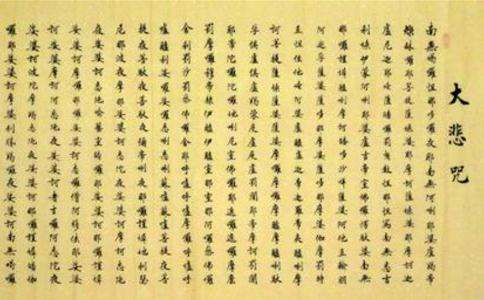

续编卷下学医发隐（民二十七年为 佛为大医王，普治众生身心
时疫流行，妻子罹病，当令彼等，各各志诚念南无观世音菩萨。汝若会念大悲咒，当加持大悲水令服，自可痊愈，正不必汲汲于医疗也。
续编卷上复朱南圃居士书（民国二十年） 大悲咒，若恳切至诚念之，即有不测之感应。若向学
光现在已是苦不堪言，目力精神均不给。日间尚有人来，又有四方之信，勿道复，看也要许多工夫。光在普陀，由光绪十九年，至民国五年，二十余年颇安乐。经年无一人来会，无一信来投。自民国六年，王幼农，以一信印数千，徐蔚如，以三信印数千。次年又印文钞。从兹一人传虚，万人传实。又以不自量，刻排各书，以期利人。二十年来，直是专为人忙。今老矣，且以闭关作躲烦计。至朝暮功课，依
今为慎修，与令爱有贞，各寄大悲香灰一包。此灰加持三月多久。每日少则诵五十遍，多则七十五遍。系大饼干桶贮之，一桶约十余斤，约计诵持大悲咒有六七千遍。此一包灰，可作二三百次冲服。初冲时，当取二十分之一，放于大碗中，用开水冲之，搅搅，候灰质沉下，将水灌于壶中，瓶中，日三服之。宜吃素，常念南无观世音圣号，必有神效。病大好后，当少冲，不必照前取二十分之一也。若不信，不志诚，则无效。富贵人多病，一则一事不肯操作，血脉便不周流。二则多食血肉诸品，若遇一有毒者，则其祸不小，或致殒命。即无毒之物，由杀时恨心所结，故带毒性。虽不能即时药杀人，然其毒积久，必发而为疮为病。张沉氏，肯令慎修戒杀吃素，其痰病当可即愈矣。所余之灰，当供于
时局危险万分。陈仲美，当先令注重在吃素念佛，求生西方。当此时期，只好认真修持，不宜泛泛然研究，以死生存亡就在眼前。若只泛泛然研究，在种善根边则有，在了生死边则无矣。念佛之外，兼念观音圣号，以期息战免难。必须如救头燃之诚，方有感格。纵国运不能即转，而自己决可蒙三宝加被，履险如夷也。所开书外，加文钞，息灾会开示，真安笔记。劝念观音文，张公馆想早寄到。今附数张，祈为知交说之。苏州虽屡被炸，有劝光他徙者，光以死生有命，与其路上受惊吓，何如安住不动，受炸而死之安乐乎，以故概以此辞。日唯念佛，念观音，念大悲咒，以为护国护民护己之据。如定业难逃，炸死，随即往生，亦所愿也。唯厌闻他徙之说，以其是苦上加苦也。
续编卷上复刘惠民居士书五（法名德惠○民国二十一年起，至二十八年止。节录汇钞。）
（其四）令友之女病已愈，亦其祖母之诚心所感。凡服大悲咒水，至诚者则必灵，不诚则难见效。
三编卷二复边无居士书一 沪战虽烈，光了无所畏。不但贵地不肯去，即灵岩山亦不肯去。今住于飞机长来之地，日诵大悲咒，念佛念观音。尚不敢住而逃之远方，岂不令人见诮。若光只孤孑一人，去住均无关系，况尚有弘化社事。光虽非寺之住持，然诸事皆以我为主。主人去，他人或亦各去，则其事便成废弛。于